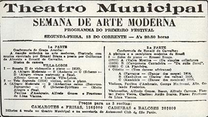
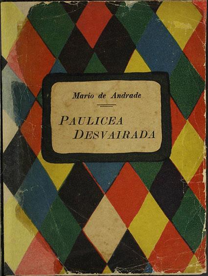

Vista do Theatro Municipal de São Paulo (SP), que sediou a Semana de Arte Moderna, década de 1920. Crédito: ARQUIVO NACIONAL, BRASÍLIA, DF
Charge de Belmonte, publicada no jornal Folha da Noite, satirizando a recepção do público da Semana de Arte Moderna, 1922. Crédito: BIBLIOTECA NACIONAL, RIO DE JANEIRO, RJ

Programação dos eventos da Semana de Arte Moderna de 1922. Crédito: BIBLIOTECA NACIONAL, RIO DE JANEIRO, RJ

Capa do livro Pauliceia Desvairada, de Mário de Andrade, 1922. Crédito: CASA MAYENÇA/BIBLIOTECA BRASILIANA GUITA E JOSÉ MINDLIN, USP, SP